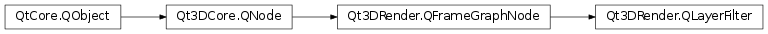

Qt3DRender.QLayerFilter¶
Synopsis¶
Functions¶
- def
addLayer(layer) - def
layers() - def
removeLayer(layer)
Detailed Description¶
Controls layers drawn in a frame graph branch.
A
Qt3DRender.QLayerFiltercan be used to instruct the renderer as to which layer(s) to draw in that branch of the frame graph.QLayerFilterselects which entities to draw based on theQLayerinstance(s) added to theQLayerFilterand as components toQt3DCore.QEntity.
QLayerFiltercan be configured to select or discard entities with a specificQLayerdepending on thefilterMode()property. By default, entities referencing one of theQLayerobjects that are also being referenced by theQLayerFilterare selected (AcceptAnyMatchingLayers).Within the FrameGraph tree, multiple
QLayerFilternodes can be nested within a branch going from root to a leaf. In that case the filtering will first operate on all entities of the scene using the filtering method specified by the first declaredQLayerFilter. Then the filtered subset of entities will be filtered again based on the filtering method set on the secondQLayerFilterdeclared. This is then repeated until allQLayerFilternodes of the branch have been consumed.
-
class
PySide2.Qt3DRender.Qt3DRender.QLayerFilter([parent=nullptr])¶ Parameters: parent – PySide2.Qt3DCore.Qt3DCore::QNodeThe constructor creates an instance with the specified
parent.
-
PySide2.Qt3DRender.Qt3DRender.QLayerFilter.addLayer(layer)¶ Parameters: layer – PySide2.Qt3DRender.Qt3DRender::QLayerAdd
layerto the current list of layers
-
PySide2.Qt3DRender.Qt3DRender.QLayerFilter.layers()¶ Return type: Returns the current list of layers
-
PySide2.Qt3DRender.Qt3DRender.QLayerFilter.removeLayer(layer)¶ Parameters: layer – PySide2.Qt3DRender.Qt3DRender::QLayerRemove
layerfrom the current list of layers
© 2018 The Qt Company Ltd. Documentation contributions included herein are the copyrights of their respective owners. The documentation provided herein is licensed under the terms of the GNU Free Documentation License version 1.3 as published by the Free Software Foundation. Qt and respective logos are trademarks of The Qt Company Ltd. in Finland and/or other countries worldwide. All other trademarks are property of their respective owners.